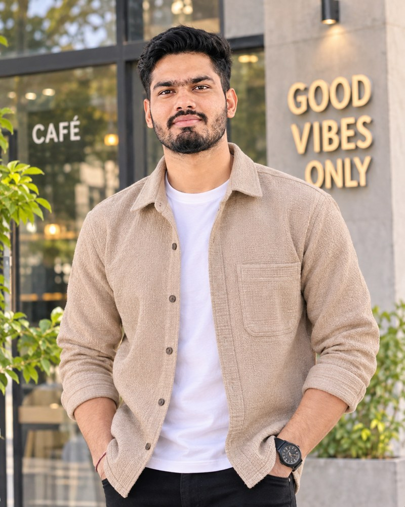

Czech Bank Analytics
MySQL · Python · Power BI · DAX
Data Analyst & storyteller from the City of Lakes. I turn untidy tables into trusted analysis, thoughtful visual reports and clear decisions. Explore my work as you travel through this digital palace inspired by Mewar architecture.
A Computer Science graduate from Udaipur, Rajasthan, focused on practical analytics. My workflow starts with understanding the business question, inspecting the data, validating quality, exploring patterns with SQL and Python, and translating findings into clear Power BI reports. I am looking for an entry-level role where curiosity, consistency and a willingness to learn can contribute to a real team.

Explore the classic Czech banking dataset across clients, accounts, transactions, cards, loans, orders and branches. I used Python-assisted loading and MySQL for exploration and validation, then developed a multi-page Power BI report with drill-through and cross-checks. This project emphasizes data relationships, metric consistency, regional exploration and explaining patterns—not just chart decoration.
MySQL · Python · Power BI · DAX

Data validation, segmentation and dashboard insights
A supply-chain analytics workflow: clean and standardize source files with Python, organize analytical tables in MySQL and surface delivery, shipment and operational patterns in Power BI. The portfolio project demonstrates how data preparation and a clear dashboard can help users investigate reliability and performance.

Python · MySQL · Power BI

Transport operations, shipment movement and delivery performance—an analytical view of logistics efficiency.
Sales data prepared through Python and explored in a four-page Power BI report. DAX measures, product and customer analysis, drill-through and Python visuals support a deeper investigation of trends, mix and performance.

Python visuals · DAX · Power BI

Four-page report · drill-through

SQL · listings · reviews · calendar

Image classification exploration · model details to be documented

Node.js · Express · SQLite · Socket.IO
A survival guide for the years nobody prepared us for. A reflective book about uncertainty, expectations, identity and finding direction in your twenties—written for those moments when life doesn't feel as sorted as it looks from the outside.

A Survival Guide for the Years Nobody Prepared Us For
By Bhupendra Singh Deora
Seeking a fresher / entry-level Data Analyst opportunity. I bring project practice in Excel, MySQL, Python and Power BI, a careful approach to data quality, and an eagerness to learn from analysts and business stakeholders. I welcome opportunities across India and remote teams.
Built with HTML · CSS · Three.js · Scroll-driven storytelling